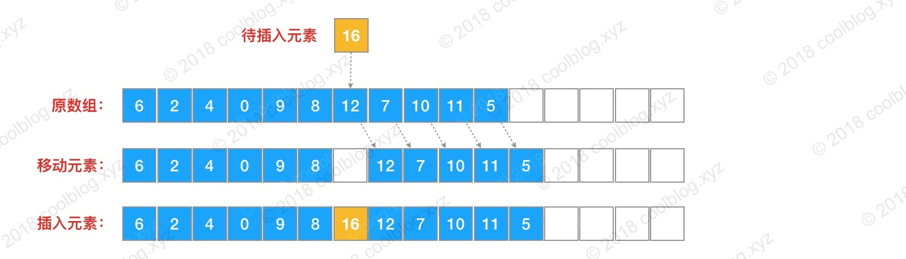
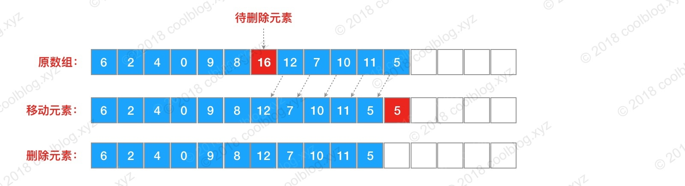

概述
ArrayList是一种变长的集合类，基于定长数组实现。ArrayList允许空值和重复元素，当往ArrayList中添加的元素数量大于其底层数组容量时，其会通过扩容机制重新生成一个更大的数组。另外，由于ArrayList底层基于数组实现，所以其可以保证在O(1)复杂度下完成随机查找操作。其他方面，ArrayList是非线程安全类，并发环境下，多个线程同时操作ArrayList，会引发不可预知的错误。
ArrayList是大家最为常用的集合类，作为一个变长集合类，其核心是扩容机制。所以只要知道它是怎么扩容的，以及基本的操作是怎样实现就够了。本文后续内容也将围绕这些点展开叙述。
2.源码分析
2.1 ArrayList属性
ArrayList属性主要就是当前数组长度size，以及存放数组的对象elementData数组，除此之外还有一个经常用到的属性就是从AbstractList继承过来的modCount属性，代表ArrayList集合的修改次数。1
2
3
4
5
6
7
8
9
10
11
12
13
14
15
16
17
18
19
public class ArrayList<E> extends AbstractList<E> implements List<E>, RandomAccess, Cloneable, Serializable {
// 序列化id
private static final long serialVersionUID = 8683452581122892189L;
// 默认初始的容量
private static final int DEFAULT_CAPACITY = 10;
// 一个空对象
private static final Object[] EMPTY_ELEMENTDATA = new Object[0];
// 一个空对象，如果使用默认构造函数创建，则默认对象内容默认是该值
private static final Object[] DEFAULTCAPACITY_EMPTY_ELEMENTDATA = new Object[0];
// 当前数据对象存放地方，当前对象不参与序列化
transient Object[] elementData;
// 当前数组长度
private int size;
// 数组最大长度
private static final int MAX_ARRAY_SIZE = 2147483639;
// 省略方法。。
}
2.2 构造方法
ArrayList有三个个构造方法，一个是无参，另一个需传入初始容量值，还有一个是通过Collection构造的。大家平时最常用的是无参构造方法，相关代码如下：1
2
3
4
5
6
7
8
9
10
11
12
13
14
15
16
17
18
19
20
21
22
23
24
25
26
public ArrayList(int initialCapacity) {
if (initialCapacity > 0) {
this.elementData = new Object[initialCapacity];
} else if (initialCapacity == 0) {
this.elementData = EMPTY_ELEMENTDATA;
} else {
throw new IllegalArgumentException("Illegal Capacity: "+
initialCapacity);
}
}
public ArrayList(Collection<? extends E> c) {
elementData = c.toArray();
if ((size = elementData.length) != 0) {
// c.toArray might (incorrectly) not return Object[] (see 6260652)
if (elementData.getClass() != Object[].class)
elementData = Arrays.copyOf(elementData, size, Object[].class);
} else {
// replace with empty array.
this.elementData = EMPTY_ELEMENTDATA;
}
}
public ArrayList() {
this.elementData = DEFAULTCAPACITY_EMPTY_ELEMENTDATA;
}
上面的代码比较简单，两个构造方法做的事情并不复杂，目的都是初始化底层数组elementData。
区别在于无参构造方法会将elementData初始化一个空数组，插入元素时，扩容将会按默认值重新初始化数组。
而有参的构造方法则会将elementData初始化为参数值大小（>= 0）的数组。
带Collection参数的构造函数：
- 1）将collection对象转换成数组，然后将数组的地址的赋给
elementData。 - 2）更新size的值，同时判断size的大小，如果是size等于0，直接将空对象EMPTY_ELEMENTDATA的地址赋给
elementData - 3）如果size的值大于0，则执行Arrays.copy方法，把collection对象的内容（可以理解为深拷贝）copy到
elementData中。
注意：this.elementData = arg0.toArray(); 这里执行的简单赋值时浅拷贝，所以要执行Arrays,copy 做深拷贝
一般情况下，我们用默认的构造方法即可。倘若在可知道将会向ArrayList插入多少元素的情况下，应该使用有参构造方法。按需分配，避免浪费。
2.3 插入
对于数组（线性表）结构，插入操作分为两种情况。一种是在元素序列尾部插入，另一种是在元素序列其他位置插入。ArrayList的源码里也体现了这两种插入情况，如下：1
2
3
4
5
6
7
8
9
10
11
12
13
14
15
16
17
18
19
20
21
22/** 在元素序列尾部插入 */
public boolean add(E e) {
// 1. 检测是否需要扩容
ensureCapacityInternal(size + 1); // Increments modCount!!
// 2. 将新元素插入序列尾部
elementData[size++] = e;
return true;
}
/** 在元素序列 index 位置处插入 */
public void add(int index, E element) {
rangeCheckForAdd(index);
// 1. 检测是否需要扩容
ensureCapacityInternal(size + 1); // Increments modCount!!
// 2. 将 index 及其之后的所有元素都向后移一位
System.arraycopy(elementData, index, elementData, index + 1,
size - index);
// 3. 将新元素插入至 index 处
elementData[index] = element;
size++;
}
对于在元素序列尾部插入，这种情况比较简单，只需两个步骤即可：
检测数组是否有足够的空间插入
将新元素插入至序列尾部
如下图：
如果是在元素序列指定位置（假设该位置合理）插入，则情况稍微复杂一点，需要三个步骤：
检测数组是否有足够的空间
将 index 及其之后的所有元素向后移一位
将新元素插入至 index 处
如下图：

从上图可以看出，将新元素插入至序列指定位置，需要先将该位置及其之后的元素都向后移动一位，为新元素腾出位置。这个操作的时间复杂度为O(N)，频繁移动元素可能会导致效率问题，特别是集合中元素数量较多时。在日常开发中，若非所需，我们应当尽量避免在大集合中调用第二个插入方法。
以上是ArrayList插入相关的分析，上面的分析以及配图均未体现扩容机制。那么下面就来简单分析一下ArrayList的扩容机制。对于变长数据结构，当结构中没有空余空间可供使用时，就需要进行扩容。在ArrayList中，当空间用完，其会按照原数组空间的1.5倍进行扩容。相关源码如下：1
2
3
4
5
6
7
8
9
10
11
12
13
14
15
16
17
18
19
20
21
22
23
24
25
26
27
28
29
30
31
32
33
34
35
36
37
38
39
40
41
42
43/** 计算最小容量,确保添加的元素有地方存储，当第一次添加元素的时候this.size+1 的值是1，所以第一次添加的时候会将当前`elementData`数组的长度变为10： */
private static int calculateCapacity(Object[] elementData, int minCapacity) {
if (elementData == DEFAULTCAPACITY_EMPTY_ELEMENTDATA) {
return Math.max(DEFAULT_CAPACITY, minCapacity);
}
return minCapacity;
}
/** 扩容的入口方法 */
private void ensureCapacityInternal(int minCapacity) {
ensureExplicitCapacity(calculateCapacity(elementData, minCapacity));
}
/** 将修改次数（modCount）自增1，判断是否需要扩充数组长度,判断条件就是用当前所需的数组最小长度与数组的长度对比，如果大于0，则增长数组长度。 */
private void ensureExplicitCapacity(int minCapacity) {
modCount++;
// overflow-conscious code
if (minCapacity - elementData.length > 0)
grow(minCapacity);
}
/** 扩容的核心方法 ,如果当前的数组已使用空间（size）加1之后 大于数组长度，则增大数组容量，扩大为原来的1.5倍。*/
private void grow(int minCapacity) {
// overflow-conscious code
int oldCapacity = elementData.length;
// newCapacity = oldCapacity + oldCapacity / 2 = oldCapacity * 1.5
int newCapacity = oldCapacity + (oldCapacity >> 1);
if (newCapacity - minCapacity < 0)
newCapacity = minCapacity;
if (newCapacity - MAX_ARRAY_SIZE > 0)
newCapacity = hugeCapacity(minCapacity);
// 扩容
elementData = Arrays.copyOf(elementData, newCapacity);
}
private static int hugeCapacity(int minCapacity) {
if (minCapacity < 0) // overflow
throw new OutOfMemoryError();
// 如果最小容量超过 MAX_ARRAY_SIZE，则将数组容量扩容至 Integer.MAX_VALUE
return (minCapacity > MAX_ARRAY_SIZE) ?
Integer.MAX_VALUE :
MAX_ARRAY_SIZE;
}
总结：
- 1）确保数插入的位置小于等于当前数组长度，并且不小于0，否则抛出异常
- 2）确保数组已使用长度（size）加1之后足够存下 下一个数据
- 3）修改次数（modCount）标识自增1，如果当前数组已使用长度（size）加1后的大于当前的数组长度，则调用grow方法，增长数组
- 4）grow方法会将当前数组的长度变为原来容量的1.5倍。
- 5）确保有足够的容量之后，使用System.arraycopy 将需要插入的位置（index）后面的元素统统往后移动一位。
- 6）将新的数据内容存放到数组的指定位置（index）上
2.4 删除
不同于插入操作，ArrayList没有无参删除方法。所以其只能删除指定位置的元素或删除指定元素，这样就无法避免移动元素（除非从元素序列的尾部删除）。相关代码如下：1
2
3
4
5
6
7
8
9
10
11
12
13
14
15
16
17
18
19
20
21
22
23
24
25
26
27
28
29
30
31
32
33
34
35
36
37
38
39
40
41
42
43
44
45
46
47
48
49
50
51/** 删除指定位置的元素 */
public E remove(int index) {
rangeCheck(index);
modCount++;
// 返回被删除的元素值
E oldValue = elementData(index);
int numMoved = size - index - 1;
if (numMoved > 0)
// 将 index + 1 及之后的元素向前移动一位，覆盖被删除值
System.arraycopy(elementData, index+1, elementData, index,
numMoved);
// 将最后一个元素置空，并将 size 值减1
elementData[--size] = null; // clear to let GC do its work
return oldValue;
}
E elementData(int index) {
return (E) elementData[index];
}
/** 删除指定元素，若元素重复，则只删除下标最小的元素 */
public boolean remove(Object o) {
if (o == null) {
for (int index = 0; index < size; index++)
if (elementData[index] == null) {
fastRemove(index);
return true;
}
} else {
// 遍历数组，查找要删除元素的位置
for (int index = 0; index < size; index++)
if (o.equals(elementData[index])) {
fastRemove(index);
return true;
}
}
return false;
}
/** 快速删除，不做边界检查，也不返回删除的元素值 */
private void fastRemove(int index) {
modCount++;
int numMoved = size - index - 1;
if (numMoved > 0)
System.arraycopy(elementData, index+1, elementData, index,
numMoved);
elementData[--size] = null; // clear to let GC do its work
}
上面的删除方法并不复杂，这里以第一个删除方法为例，删除一个元素步骤如下：
获取指定位置 index 处的元素值
将 index + 1 及之后的元素向前移动一位
将最后一个元素置空，并将 size 值减 1
返回被删除值，完成删除操作
如下图：

上面就是删除指定位置元素的分析，并不是很复杂。
现在，考虑这样一种情况。我们往ArrayList插入大量元素后，又删除很多元素，此时底层数组会空闲处大量的空间。因为ArrayList没有自动缩容机制，导致底层数组大量的空闲空间不能被释放，造成浪费。对于这种情况，ArrayList也提供了相应的处理方法，如下：1
2
3
4
5
6
7
8
9/** 将数组容量缩小至元素数量 */
public void trimToSize() {
modCount++;
if (size < elementData.length) {
elementData = (size == 0)
? EMPTY_ELEMENTDATA
: Arrays.copyOf(elementData, size);
}
}
通过上面的方法，我们可以手动触发ArrayList的缩容机制。这样就可以释放多余的空间，提高空间利用率。
总结：
根据索引remove
- 1）判断索引有没有越界
- 2）自增修改次数
- 3）将指定位置（index）上的元素保存到oldValue
- 4）将指定位置（index）上的元素都往前移动一位
- 5）将最后面的一个元素置空，好让垃圾回收器回收
- 6）将原来的值oldValue返回
注意：调用这个方法不会缩减数组的长度，只是将最后一个数组元素置空而已。
根据对象remove
- 循环遍历所有对象，得到对象所在索引位置，然后调用fastRemove方法，执行remove操作
2.5 遍历
ArrayList实现了 RandomAccess 接口（该接口是个标志性接口），表明它具有随机访问的能力。ArrayList底层基于数组实现，所以它可在常数阶的时间内完成随机访问，效率很高。对ArrayList进行遍历时，一般情况下，我们喜欢使用 foreach 循环遍历，但这并不是推荐的遍历方式。ArrayList具有随机访问的能力，如果在一些效率要求比较高的场景下，更推荐下面这种方式：1
2
3for (int i = 0; i < list.size(); i++) {
list.get(i);
}
至于原因也不难理解，foreach 最终会被转换成迭代器遍历的形式，效率不如上面的遍历方式。
2.6 iterator方法
interator方法返回的是一个内部类，由于内部类的创建默认含有外部的this指针，所以这个内部类可以调用到外部类的属性。1
2
3public Iterator<E> iterator() {
return new Itr();
}
一般的话，调用完iterator之后，我们会使用iterator做遍历，这里使用next做遍历的时候有个需要注意的地方，就是调用next的时候，可能会引发ConcurrentModificationException，当修改次数，与期望的修改次数（调用iterator方法时候的修改次数）不一致的时候，会发生该异常，详细我们看一下代码实现：1
2
3
4
5
6
7
8
9
10
11
12("unchecked")
public E next() {
checkForComodification();
int i = cursor;
if (i >= size)
throw new NoSuchElementException();
Object[] elementData = ArrayList.this.elementData;
if (i >= elementData.length)
throw new ConcurrentModificationException();
cursor = i + 1;
return (E) elementData[lastRet = i];
}
expectedModCount这个值是在用户调用ArrayList的iterator方法时候确定的，但是在这之后用户add，或者remove了ArrayList的元素，那么modCount就会改变，那么这个值就会不相等，将会引发ConcurrentModificationException异常，这个是在多线程使用情况下，比较常见的一个异常。1
2
3
4final void checkForComodification() {
if (modCount != expectedModCount)
throw new ConcurrentModificationException();
}
2.7 System.arraycopy 方法
| 参数 | 说明 |
|---|---|
| src | 原数组 |
| srcPos | 原数组 |
| dest | 目标数组 |
| destPos | 目标数组的起始位置 |
| length | 要复制的数组元素的数目 |
2.8 Arrays.copyOf方法
original - 要复制的数组
newLength - 要返回的副本的长度
newType - 要返回的副本的类型
其实Arrays.copyOf底层也是调用System.arraycopy实现的源码如下：1
2
3
4
5
6
7//基本数据类型（其他类似byte，short···）
public static int[] copyOf(int[] original, int newLength) {
int[] copy = new int[newLength];
System.arraycopy(original, 0, copy, 0,
Math.min(original.length, newLength));
return copy;
}
3.其他细节
3.1 快速失败机制
在 Java 集合框架中，很多类都实现了快速失败机制。该机制被触发时，会抛出并发修改异常ConcurrentModificationException，这个异常大家在平时开发中多多少少应该都碰到过。关于快速失败机制，ArrayList的注释里对此做了解释，这里引用一下：
The iterators returned by this class’s iterator() and
listIterator(int) methods are fail-fast
if the list is structurally modified at any time after the iterator is
created, in any way except through the iterator’s own
ListIterator remove() or ListIterator add(Object) methods,
the iterator will throw aConcurrentModificationException. Thus, in the face of
concurrent modification, the iterator fails quickly and cleanly, rather
than risking arbitrary, non-deterministic behavior at an undetermined
time in the future.
上面注释大致意思是，ArrayList迭代器中的方法都是均具有快速失败的特性，当遇到并发修改的情况时，迭代器会快速失败，以避免程序在将来不确定的时间里出现不确定的行为。
以上就是 Java 集合框架中引入快速失败机制的原因，并不难理解，这里不多说了。
3.2 关于遍历时删除
遍历时删除是一个不正确的操作，即使有时候代码不出现异常，但执行逻辑也会出现问题。关于这个问题，阿里巴巴 Java 开发手册里也有所提及。这里引用一下：
【强制】不要在 foreach 循环里进行元素的 remove/add 操作。remove 元素请使用 Iterator 方式，如果并发操作，需要对 Iterator 对象加锁。
相关代码（稍作修改）如下：1
2
3
4
5
6
7
8
9
10List<String> a = new ArrayList<String>();
a.add("1");
a.add("2");
for (String temp : a) {
System.out.println(temp);
if("1".equals(temp)){
a.remove(temp);
}
}
}
相信有些朋友应该看过这个，并且也执行过上面的程序。上面的程序执行起来不会虽不会出现异常，但代码执行逻辑上却有问题，只不过这个问题隐藏的比较深。我们把 temp 变量打印出来，会发现只打印了数字1，2没打印出来。初看这个执行结果确实很让人诧异，不明原因。如果死抠上面的代码，我们很难找出原因，此时需要稍微转换一下思路。我们都知道 Java 中的 foreach 是个语法糖，编译成字节码后会被转成用迭代器遍历的方式。所以我们可以把上面的代码转换一下，等价于下面形式：
1 | List<String> a = new ArrayList<>(); |
这个时候，我们再去分析一下ArrayList的迭代器源码就能找出原因。1
2
3
4
5
6
7
8
9
10
11
12
13
14
15
16
17
18
19
20
21
22
23
24
25
26
27
28
29
30private class Itr implements Iterator<E> {
int cursor; // index of next element to return
int lastRet = -1; // index of last element returned; -1 if no such
int expectedModCount = modCount;
public boolean hasNext() {
return cursor != size;
}
("unchecked")
public E next() {
// 并发修改检测，检测不通过则抛出异常
checkForComodification();
int i = cursor;
if (i >= size)
throw new NoSuchElementException();
Object[] elementData = ArrayList.this.elementData;
if (i >= elementData.length)
throw new ConcurrentModificationException();
cursor = i + 1;
return (E) elementData[lastRet = i];
}
final void checkForComodification() {
if (modCount != expectedModCount)
throw new ConcurrentModificationException();
}
// 省略不相关的代码
}
我们一步一步执行一下上面的代码，第一次进入 while 循环时，一切正常，元素 1 也被删除了。但删除元素 1 后，就无法再进入 while 循环，此时 it.hasNext() 为 false。原因是删除元素 1 后，元素计数器 size = 1，而迭代器中的 cursor 也等于 1，从而导致 it.hasNext() 返回false。归根结底，上面的代码段没抛异常的原因是，循环提前结束，导致 next 方法没有机会抛异常。不信的话，大家可以把代码稍微修改一下，即可发现问题：1
2
3
4
5
6
7
8
9
10
11
12List<String> a = new ArrayList<>();
a.add("1");
a.add("2");
a.add("3");
Iterator<String> it = a.iterator();
while (it.hasNext()) {
String temp = it.next();
System.out.println("temp: " + temp);
if("1".equals(temp)){
a.remove(temp);
}
}
以上是关于遍历时删除的分析，在日常开发中，我们要避免上面的做法。正确的做法使用迭代器提供的删除方法，而不是直接删除。
4.总结
ArrayList自己实现了序列化和反序列化的方法，因为它自己实现了 private void writeObject(java.io.ObjectOutputStream s)和 private void readObject(java.io.ObjectInputStream s) 方法
ArrayList基于数组方式实现，无容量的限制（会扩容）
- 添加元素时可能要扩容（所以最好预判一下），删除元素时不会减少容量（若希望减少容量，trimToSize()），删除元素时，将删除掉的位置元素置为null，下次gc就会回收这些元素所占的内存空间。
- 线程不安全
add(int index, E element)：添加元素到数组中指定位置的时候，需要将该位置及其后边所有的元素都整块向后复制一位get(int index)：获取指定位置上的元素时，可以通过索引直接获取（O(1)）remove(Object o)需要遍历数组remove(int index)不需要遍历数组，只需判断index是否符合条件即可，效率比remove(Object o)高
*contains(E)需要遍历数组 - 使用
iterator遍历可能会引发多线程异常